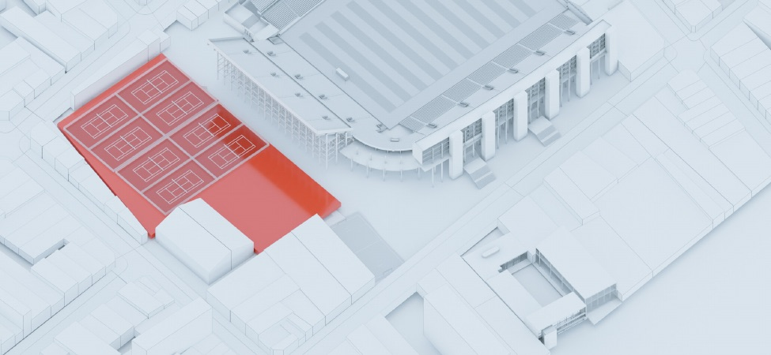
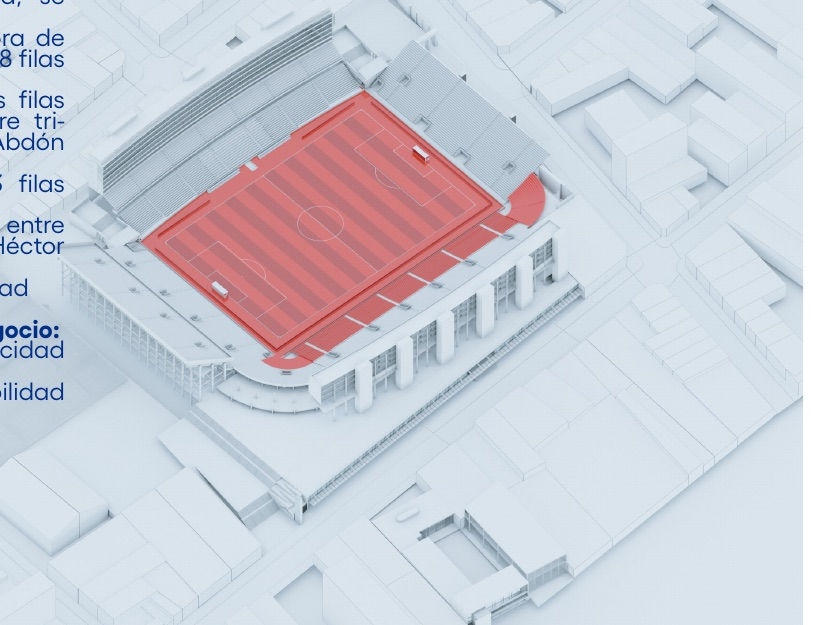
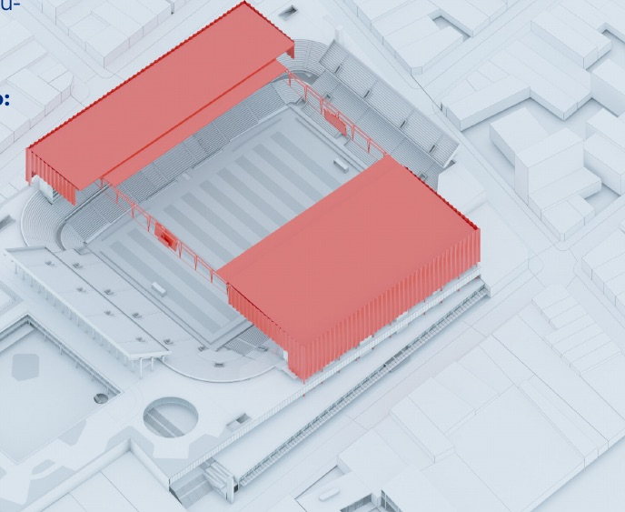
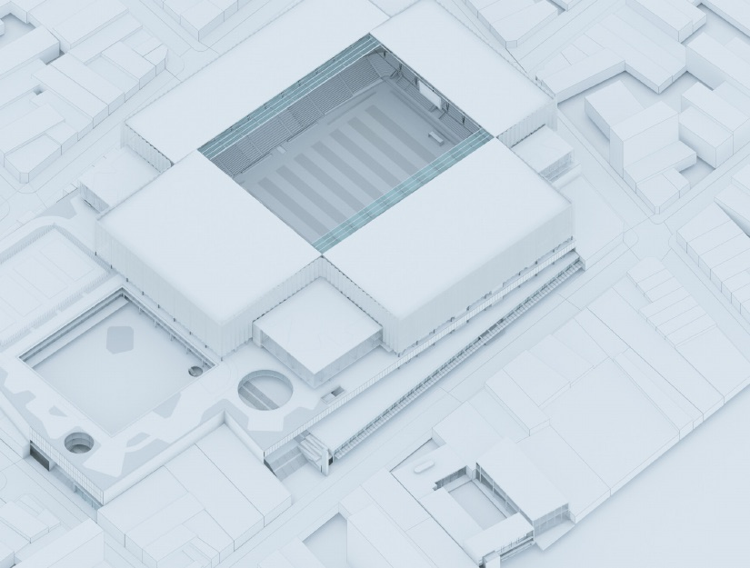

1 EstacionamientoMaster Plan GPC
El anteproyecto, etapa por etapa
Qué se construye en cada una de las 14 etapas y en qué orden, con la fuente de cada dato.
masterplangpc.com/anteproyectoLáminas: Guerra De Rossa · Varesi · Tribuna Sur

3 Cancha
12 Techo
Proyecto completo